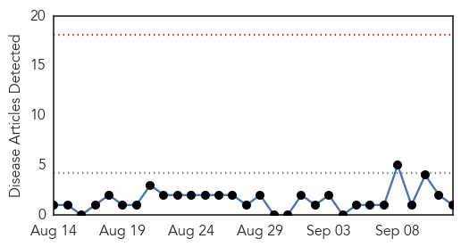
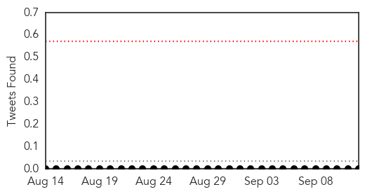
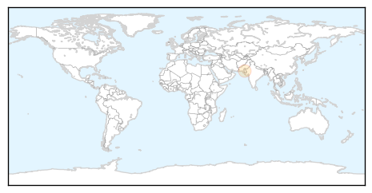
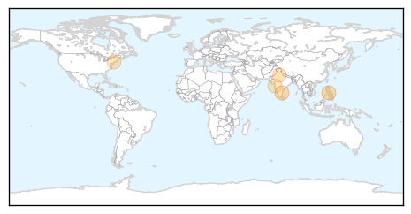
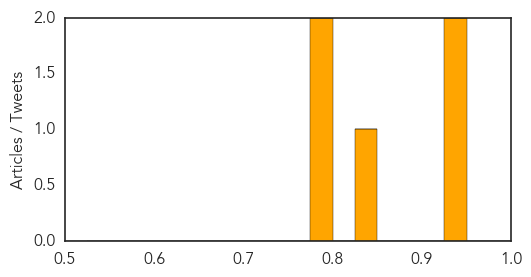

Hepatitis
30-Day Web Trend
0 alerts, 0 warnings

30-Day Twitter Trend
0 alerts, 0 warnings

Article Locations
Article Confidences

Top Articles:
Top Tweets:
-
No tweets found for Sep 12, 2014
Measles
30-Day Web Trend
0 alerts, 0 warnings
30-Day Twitter Trend
0 alerts, 0 warnings

Article Locations
Article Confidences
Top Articles:
- 0.948
- U.S. Experiencing 'Record Number of Measles Cases'
- 0.932
- Health Ministry rushes doctors, medicines to Jammu & Kashmir
- 0.850
- Rescue operations scaled up amid fears of water-borne disease outbreak
- 0.776
- Some Truths Behind Childhood Vaccination
- 0.775
- Disease worries rise as flood waters recede in Jammu and Kashmir
Top Tweets:
-
No tweets found for Sep 12, 2014